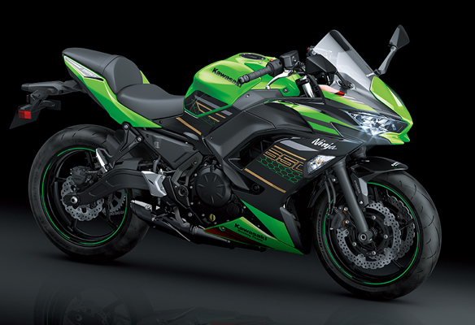

Concept : NINJA 앰배서더
NINJA AMBASSADOR
이전 모델의 "Fun, Style, Easy" 개념을 유지하면서 매우 균형 잡히고 익사이팅한 New "Ninja 650"은 650cc Parallel Twin 엔진으로 low-mid 레인지에 중점을 둔 슬림한 미들급 패키지의 가벼운 섀시를 특징으로 합니다. *엔진 개선 사항은 배기가스 배출을 줄이고 중속 토크를 높이는데 기여하며, 최신 타이어를 채택하여 더 가벼운 핸들링을 제공합니다. 이전과 마찬가지로 민첩한 핸들링과 다이렉트 한 감각이 다루기 쉬운 동력 전달과 라이더 친화적인 조작성으로 보완되었습니다.